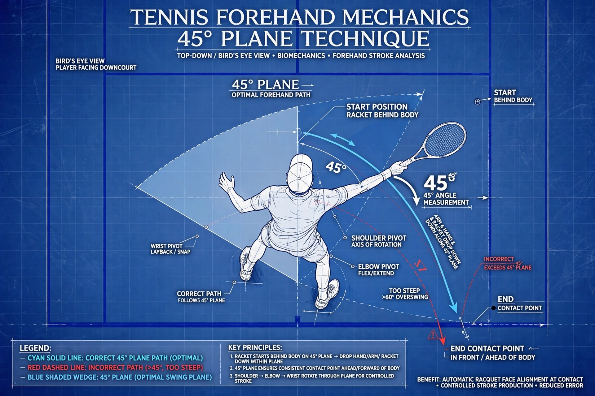

Sinh Cơ Học: Mặt Phẳng Vung Vợt 45° & Vector Lực Hình Số 8 Cú Forehand
Hệ Thống Quần Vợt 45° — Ứng Dụng Hồ Sơ & Bản Vẽ Tương Tác
Khám phá mô hình động mặt phẳng vung vợt 45°, sơ đồ kiến trúc 2D nhìn từ trên, quỹ đạo vector 3D và bộ công cụ tải gói phân tích hoàn chỉnh.
Tiên Đề Sinh Cơ Học Cốt Lõi: Cánh tay đánh bóng phải luôn hoạt động trong phạm vi cung giới hạn nghiêm ngặt $45^\circ$ phía trước mặt phẳng ngực. Kéo cánh tay vượt quá $45^\circ$ ra sau lưng sẽ bẻ gãy liên kết thân cốt lõi, làm suy giảm cấu trúc khớp và tăng vọt nguy cơ rách sụn viền vai. Khi kết hợp với quỹ đạo hình số 8 nằm ngang (vòng vô cực $\infty$), gia tốc hướng tâm liên tục sẽ chuyển dịch vector lực mượt mà, tạo tốc độ đầu vợt bùng nổ mà không tốn sức.
1. Giải Phẫu Sinh Cơ Học Của Liên Kết Tay - Khối Ngực 45°
Uy lực đánh bóng trong tennis hiện đại bắt nguồn từ việc khóa cấu trúc xương và cơ bắp thay vì dùng cánh tay kéo độc lập. Khi bàn tay đánh bóng duy trì trước xương ức trong cung $45^\circ$, chỏm xương cánh tay được cố định hoàn hảo trong ổ chảo nhờ cơ ngực lớn và cơ dưới vai.

Hình 1: Sơ Đồ Kiến Trúc Nhìn Từ Trên Xuống — Cung giới hạn 45° phía trước ngực và hình học điểm tiếp xúc tối ưu.
Ba Nguyên Tắc Bất Biến Của Hệ Thống 45°
- Vị Trí Tay (Hand Position): Bàn tay luôn ở phía trước ngực trong suốt pha xoay thân (unit turn). Khuỷu tay giữ thấp, nép sát mạn sườn ($10 - 15\text{ cm}$), cổ tay thả lỏng ở trạng thái trung tính.
- Vị Trí Thân (Body Position): Lực nổ được tạo ra từ chuyển động xoay hông và thân trên nhờ phản lực mặt đất ($GRF$). Tuyệt đối không dùng cánh tay kéo riêng lẻ.
- Vị Trí Vợt (Racket Position): Đầu vợt trượt rơi trên mặt phẳng nghiêng $45^\circ$, được dẫn hướng bởi quán tính xoay của thân người. Mặt vợt tự động căn chỉnh vuông góc với mục tiêu tại điểm chạm.

Hình 2: Sơ Đồ Vector 3D — Quỹ đạo rơi theo trọng lực trên mặt phẳng 45° chuyển tiếp mượt mà vào pha bung lực thân trên.
2. Vật Lý Học Của Quỹ Đạo Hình Số 8 Nằm Ngang (Infinity Loop)
Các cú đánh theo đường thẳng tiến - lùi buộc cây vợt phải dừng lại đột ngột trước khi tăng tốc tới trước. Ngược lại, chuyển động cong hình số 8 khai thác **gia tốc hướng tâm** để thay đổi hướng vector lực liên tục mà không làm suy giảm vận tốc đầu vợt:
Trong đó $m$ là khối lượng hiệu dụng của hệ thống vợt và cẳng tay, $v$ là vận tốc tiếp tuyến tức thời, và $r$ là bán kính quay từ trục thân người.
Hình số 8 giúp chuyển đổi vector lực một cách mượt mà và êm ái, bảo toàn toàn bộ động lượng tích lũy và giải phóng tốc độ đầu vợt ($RHS$) tối đa xuyên qua tâm bóng.
Hình 3: Bản Đồ Vector Toán Học Của Quỹ Đạo Hình Số 8 — Thể hiện gia tốc hướng tâm liên tục và chuyển tiếp thế năng thành động năng.
3. Năm Giai Đoạn Động Học Của Cú Forehand Hiện Đại
| Giai Đoạn | Hành Động Sinh Cơ Học | Mốc Kiểm Tra Kỹ Thuật |
|---|---|---|
| 1. Chuẩn Bị (Unit Turn) | Thân trên xoay $45^\circ - 60^\circ$ như một khối; hai tay cùng đưa vợt ra sau. | Bàn tay luôn ở trước ngực; đầu vợt chỉ chếch lên góc $45^\circ - 60^\circ$. |
| 2. Thả Vợt (Drop) | Tay trái buông; trọng lực kéo đầu vợt rơi trượt trên mặt phẳng nghiêng $45^\circ$. | Cùi chỏ giữ thấp sát mạn sườn ($10 - 15\text{ cm}$), cổ tay thả lỏng. |
| 3. Kéo Trễ (Lag & Snap) | Hông xoay trước; bàn tay dẫn dắt; đầu vợt trễ lại tạo mô-men đòn bẩy tối đa. | Cổ tay ngửa thụ động tự nhiên; không dùng cơ cẳng tay gồng kéo. |
| 4. Tiếp Xúc (Impact) | Quỹ đạo vung dốc từ thấp lên cao gặp bóng tại điểm ngọt sinh cơ học. | Tiếp xúc trước hông dẫn đường $30 - 40\text{ cm}$; mặt vợt đóng $80^\circ - 85^\circ$. |
| 5. Vung Thoát Lực (Follow-Through) | Giải phóng hoàn toàn quán tính ly tâm theo chuyển động gạt kính. | Vợt vòng qua vai đối diện mượt mà; không giật phanh hãm đột ngột. |

Hình 4: Tư Liệu Ghi Chép Huấn Luyện Gốc — Phân tích chi tiết 5 giai đoạn động học và bản chất vector lực hình số 8.
4. Ma Trận Chẩn Đoán Lỗi Kỹ Thuật Phổ Biến
Lỗi 1: Cánh Tay Kéo Vượt Quá 45° Ra Sau Lưng
Khi người chơi cố vung cánh tay ra sau lưng để lấy đà, cánh tay bị ngắt kết nối với lồng ngực. Điều này gây tiếp xúc trễ mãn tính, mặt vợt bị bẻ ngửa khiến bóng bay vọt dài, đồng thời tạo áp lực kéo xé lên bao khớp vai trước.
Lỗi 2: Cánh Gà (Chicken Wing)
Cùi chỏ vểnh bổng lên cao ($>120^\circ$) phá vỡ hoàn toàn mặt phẳng vung vợt $45^\circ$. Cú đánh trở thành động tác quạt tay yếu ớt, thiếu lực nén từ thân và gây đau khớp khuỷu tay ngoài.
Lỗi 3: Đánh Bằng Tay Quên Thân (Arming)
Gồng cơ bắp tay giật vợt tới trước trước khi hông kịp xoay triệt tiêu độ trễ đàn hồi (lag). Bóng đi phẳng, rúc lưới hoặc thiếu độ sâu xuyên thấu.
5. Video Phân Tích Thực Chiến
6. Hệ Thống Bài Tập Khắc Phục Thực Chiến
Bài Tập Bức Tường 45°: Đứng quay lưng cách bức tường phẳng 1 sải tay. Vào thế chuẩn bị và xoay thân. Nếu đầu vợt va chạm vào tường, biên độ mở vợt đã vượt quá cung $45^\circ$. Tập 20 lần thả vợt rơi trên mặt phẳng $45^\circ$ mà không chạm tường.
Vẽ Hình Số 8 Trước Gương (Mirror Figure-8 Drill)
Đứng trước gương toàn thân. Cầm vợt vung chậm rãi vẽ hình số 8 nằm ngang liên tục, mỗi chu trình kéo dài 2 giây. Đảm bảo điểm giao nhau của số 8 luôn ở trước xương ức và bàn tay không bao giờ vượt ra sau mặt phẳng lưng.
Đếm Nhịp 1 - 2 Khóa Điểm Chạm (1-2 Cadence Freeze)
Người tập thả bóng tự do từ góc $45^\circ$. Đếm to: *"1"* khi bóng chạm đất (vợt rơi ở đáy mặt phẳng $45^\circ$), *"2"* khi tiếp xúc bóng. Đóng băng bất động tại điểm chạm để kiểm tra tay cách hông trước $30 - 40\text{ cm}$.
Kết Luận
Làm chủ cú forehand hiện đại được xây dựng trên sự kỷ luật về hình học và độ mượt của vật lý. Bằng cách khóa chặt cánh tay trong **cung cấu trúc $45^\circ$ trước ngực** và dẫn dắt cây vợt theo **dòng chảy hình số 8 vô cực**, người chơi sẽ triệt tiêu hoàn toàn sự căng cứng cơ bắp, bộc phát uy lực tối đa và bảo vệ khớp xương vững bền suốt sự nghiệp thi đấu.